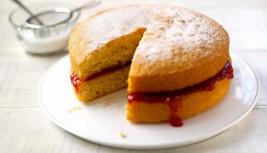

The chocolate mints have been passed, the brandies have been quaffed and now it’s time to say goodbye to the BBC Food blog.
The blog is closing and will no longer be updated after this post closes for comments in two weeks.
Thank you to those that have read the blog, shared it and posted comments. We’ve really enjoyed discussing your kitchen conundrums and reading your recipe ideas.
But now we are making an adjustment to the way we publish. We are using a different (more flexible) article template to publish stories where we’ll continue to explore the way we eat now: investigating new (and old) ingredients, interviewing chefs and food producers, and examining the science and history of food.
In the future, comment and analysis articles, similar to those posted in the BBC Food blog, will be published in these templates, and can be found from the BBC Food homepage.
This change will enable us to do what the BBC Food blog has always set out to do, but more effectively.
We’re still available for a natter on Twitter (@BBCFood) and on Pinterest.
Thank you again for all your contributions,
Emily
BBC Food producer
The other day I was given a bean slicer by a kind friend who couldn’t believe I still sliced my runner beans by hand. I bought some and eagerly set to work only to find that most of the beans were too big to fit into it. Which left me with a gadget that will slice thin beans which don’t really need slicing anyway.
It’s not the only gadget I’ve got that doesn’t earn its keep. There’s an egg separator, a hard-boiled egg slicer and a musical egg-timer you pop in the boiling water which plays 'Killing me softly' when the eggs are soft-boiled. My husband inexplicably loves that.
Gadget proof? Would your slow cooker come out of the cupboard for this beef brisket ?
I have a gravy de-greaser and a cherry and olive stoner that I use once a year, if that. A lemon zester (what’s wrong with the small holes on the grater?) and a gadget for stamping out ravioli that I bought on an Italian trip when I went mad in a local hardware store. And this I haven’t ever used - along with a gnocchi roller.
At least they don’t take up much room. I’m almost embarrassed to tell you about the larger gadgets that clutter my cupboards and unit tops.
Read the rest of this entry
If there’s one dish that reminds me of childhood home, it’s cauliflower cheese. My mum was a reluctant cook so cauliflower cheese became our staple diet – every day for high tea. We washed it down with weak tea and Women’s Institute cake. Actually, mum did a pretty good job: unlike the cooks at school who turned cauliflower into grey mush, she never overcooked it. And she lavished the magical tree-like florets with generous amounts of cheese-rich sauce.
So I’m sad to hear that we Brits no longer want to eat this wonderfully eccentric-looking vegetable. Sales have dropped around 35% over the past decade, and last year, nearly half of British households didn’t buy a single cauliflower. In short, if we don’t start buying this snowy brassica again, growers are now warning it could soon become extinct.
The reason I’m fighting to keep cauliflower on our tables - apart from bringing back tender childhood memories – is its sheer versatility. It’s crunchily delicious eaten raw in a salad with plenty of lemon, in fritters, or as a pretty crudité to dunk into delicious dips. It combines brilliantly with spices, green beans, cucumbers and courgettes to make a piccalilli, and is amazing in a curry. Cauli is nice roasted too. And few things pair better with fresh scallops than a silky smooth cauliflower purée.
Read the rest of this entry
As part of our on-going series on the kitchen gadgets that really count, this time our eye turns to cakes. Discussions in the office pit me against the rest of the team who believe an electric hand whisk is an essential piece of kit when making cakes. I remonstrate that people were making cakes long before we had electricity in our houses, but they insist: cakes are just better when an electric whisk is used. Time to find out…

Mary Berry's Victoria sandwich is a baking classic and highly rated by users of BBC Food.
The set up
A basic sponge recipe is needed so that we can easily assess any differences in texture, taste and appearance. Moist cakes such as fudgy chocolate cake and carrot cake have more tolerance for slip-ups than simple sponges, so I decide to plump for the classic Victoria sponge. Mary Berry’s perfect Victoria sandwich is our highest-rated sponge cake recipe so, knowing the recipe works, it seems a sensible choice.
Read the rest of this entry
With hopefully a few weeks of summer to eke out, I got thinking about how to manage outdoor cooking and eating in a more effortless and stylish way than I have in the past.
When the sun suddenly shines and I decide to throw an impromptu barbecue, it's often the same food that I reach for – sausages, whole mackerel, courgettes halved lengthways and brushed with olive oil; all fine food but it's time for something new.
So who better to ask than Sam and Sam Clark of award-winning restaurant Moro in London? They will be cooking at this weekend’s Wilderness Festival where food is arguably the headlining act (the line-up of chefs also includes Yottam Ottolenghi, Fergus Henderson and Valentine Warner).
Read the rest of this entry
When it comes to dairy, the French are commonly considered the best producers in the world, with some regions being given the protection of AOP status. And when we’re looking for something special to smear on our bread we reach out for French products, because they’re the best. Right? Well, maybe not.
As the Isigny AOP butter website puts it “How do we explain the fact that gourmets favour Isigny butter? It is simple! The Isigny terroir has the advantage of a mild, damp climate”. Mmm, remind you of anything? The British climate is nothing if not mild and damp - so why aren’t our dairy products held in equally high esteem?
British: you can't put a better bit of butter on your knife.
There are lots of fabulous butters available in the UK and you don’t have to look far to find them: most supermarkets stock butter from small, local producers and typically the price will be less than that of the big-brand butters. So you can support small businesses and dairies, pay less and most probably get a better tasting product – what’s not to like?
The UK’s mild summers punctuated with frequent bouts of drizzle produce green and pleasant lands that are perfect for dairy production. The best cream comes from dairy cows grazed in meadows, so climate is crucial because it affects what will grow in the fields and therefore what the cow eats. And a cow’s diet has a marked effect on the flavour of butter.
Read the rest of this entry